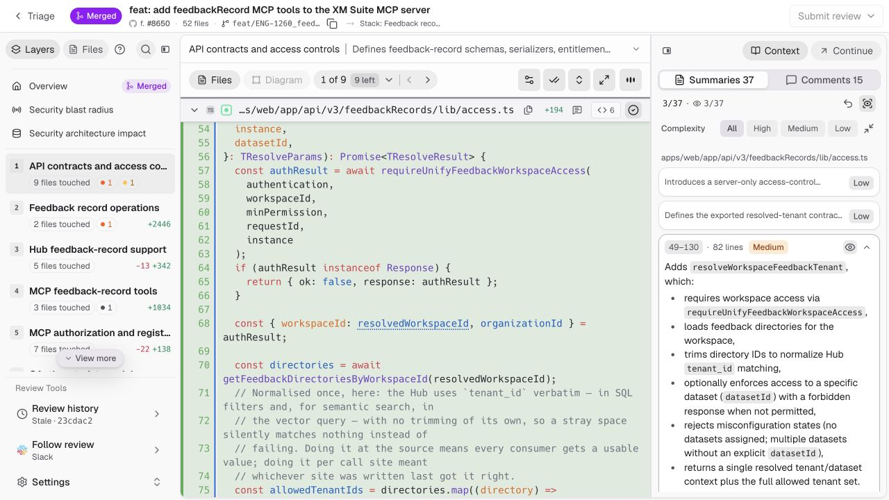

Checking a summary against the code.
The brief was to make Change Stack easier to interact with, without losing its capability. I kept layers and worked through one review task: check the workspace-access summary, follow the guard, then get back to the call.
Desktop prototype · 7 of 52 diffs · pinned commit 23cdac2 · manually mapped links
What I prioritized
I worked from the assigned Formbricks review and followed a summary into the code. I compared four ways to start a review, then chose M to improve that route using the PR’s existing content. Layers, J/K, summary jumps, Z Focus and explicit viewed status already exist in CodeRabbit; I kept them.
Find the right lines
Six summary points share L49–130. I can reach the function, but I still have to find which lines support each point.
Keep a way back
The access check continues in another file. I wanted to inspect the guard and return to the same call and selection.
Separate the jobs
File, display and review controls compete above the diff. I grouped them by what they affect.
The brief asks for 3–5 diagnoses and one strong screen. These are my three priorities for M. Their frequency and effect on review quality still need developer testing.
Compare the same access call
Light · Unified · 1280 × 720Both captures start at line 54 of access.ts, at commit 23cdac2. The original has more code on screen. M gives file navigation and individual summary links more room.

The expanded summary covers the whole function. The access call is visible within it. This is an unaltered capture from the live review.
- Six points, one broad targetThe shared L49–130 range gets me to the function. I still need to locate the lines behind a particular point.
- Actions above the diffFile navigation, display and review actions occupy the same area. Their grouping is a design opportunity.
- Context worth keepingMerged status, PR number, 52 files, branch and stack identify this review. I kept these details.

“Require workspace access” selects lines 57–65. The next action opens the referenced guard. Full summary wording and the whole function remain available.
- Each point gets a targetA short label opens its smaller range. Full wording and the whole function remain available.
- Group related actionsMark viewed stays beside the file; Unified, Split and Focus stay with the code.
- Keep the review detailsPR metadata and icons remain visible. The separate 0/7 count describes only the sample’s files.
What differs between these captures?
Same PR, commit, file, starting line, theme, display mode and viewport. These are screenshots of both running interfaces. Their spacing and type sizes remain unchanged, so different amounts of surrounding code fit on screen.
The original shows full summary wording and observed progress. M starts local progress at zero and uses shorter labels, with full wording in a disclosure. M’s submission bar is included. The prototype contains seven added-file diffs; it does not reproduce the original semantic-diff engine.
The original also supports Split. See the earlier source capture. It is supporting context, not the baseline for this comparison.
I tried four ways into the review.
I compared each direction against three needs: get to code quickly, keep the layer model, and work with the information available in this PR.
Start with behavior
Understand the intended change → check the code
This puts the intended change first. I liked that focus, but I’d need reliable intent before using it to guide a review.
Start with counterexamples
Choose a case that could fail → inspect the guard
This challenges the summary directly. The cases need to come from real evidence; invented scenarios could send the reviewer in the wrong direction.
Start with impact
See affected areas → follow their dependencies
A dependency map could help me choose where to look. I’d need to trust those relationships before making the map the starting point.
Start with the author’s handoff
Read the author’s notes → check the open questions
Author notes could explain decisions the diff cannot. But someone has to prepare that handoff before the review can benefit from it.
I chose M to work within the existing review.
M lets the reviewer start with the existing summary and inspect the code immediately. I could keep layers and use this PR’s content without requiring new author input or a reliable dependency map. I built the summary-to-code route.
These were design explorations. I haven’t run an A/B test with developers. M is my choice for this brief; the next test could change it.
Follow the check, then return.
Open the prototype at the access call. Look at what the caller passes to the guard.
- Choose Inspect guard in feedback-access.ts. Read the workspace check at line 27 and the entitlement check at line 38.
- Choose Return to access.ts. The selected point and reading position should return.
- Check that neither file became viewed just by visiting it. Try Mark viewed, then Undo.
Try J/K to change layers and Z for Focus. Other layers show their captured names and counts; their diffs are outside this sample. Keep reading around the highlight; the summary could leave something out.
Open the working prototypeWhy I kept one code pane
Showing the caller and guard together squeezed both at laptop width, so I chose Return. Keeping files and summaries visible also takes space. Focus gives that space back when I want to read more code.
I haven’t tested this with developers yet. I’d ask them to explain the access check on both screens, then find something the summary might miss. If smaller highlights lead people to overlook code, I’d change them.
What stayed, and what still needs work
I kept the main actions close to the code and gave secondary tools named destinations. This accounts for the capabilities in the design; it does not establish full functional parity. The prototype demonstrates a limited path through the PR.
Where each capability lives
| Capability | Where it lives | Prototype coverage |
|---|---|---|
| Layers and files | Left rail; previous / next beside the file | Seven layer names; nine layer-1 paths; seven working diffs. Global Files remains a preview. |
| Summaries and comments | Right context; file / layer scope | Captured content, manual code links and local notes. Full source coverage is not implemented. |
| Diff and reading controls | Code display strip; Tools; Outline | Unified / Split, Wrap and Focus work. The sample covers added files; semantic diff is outside scope. |
| Review progress | Mark viewed; Summary options; header | Viewed and seen stay separate. Undo reverses a viewed mark. Submit is disabled for the merged PR. |
| Overview and impact | PR overview above the layer list | Overview and architecture are previews. Blast radius stays unavailable, as observed in the source. |
| History and review tools | More review tools; About layer | History, Continue, Follow review and other settings are previews. Diagrams remains unavailable. |
| Search and recovery | File position opens the file list; About this prototype | File search covers nine paths. Loading, retry and empty-state demos are separate from the PR. |
Working in this sample
Summary links, the guard and Return, file switching, Focus, viewed progress and Undo. Notes and progress stay in the tab.
Before building it in the product
Test with developers, cover modified-file diffs and stale links, and validate the complete review workflow. Manual links and placement previews need real data and integration.
The PR is merged, so Submit is disabled. This work grew beyond the brief’s original 1–2 hour timebox. AI tools supported exploration and implementation; no user study or measured time saving is claimed.